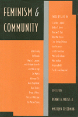

<body bgcolor="#FFFFFF" text="#000000" link="#0000FF" vlink="#CC0000" alink="#CC0000"><center><hr width="350" size="1" align="center" noshade>A rich collection of essays on the importance of community to women's social, cultural, and political relationships<hr width="350" size="1" align="center" noshade><p><a href="https://cdcshoppingcart.uchicago.edu/Cart/ChicagoBook.aspx?ISBN=9781566392761&&PRESS=temple" target="_top">Buy this book!</a> | <a href="https://cdcshoppingcart.uchicago.edu/Cart/Cart.aspx?PRESS=temple" target="_top">View Cart</a> | <a href="https://cdcshoppingcart.uchicago.edu/Cart/Cart.aspx?PRESS=temple" target="_top">Check Out</a></p><p></p></center><!--none//--><h1>Feminism and Community</h1>
<h3>edited by Penny A. Weiss and Marilyn Friedman</h3>
<P>cloth 1-56639-276-4 $83.50, Jun 95, <FONT COLOR=#990033>Out of Stock Unavailable</FONT>
<br>paper 1-56639-277-2 $32.95, Jun 95, <FONT COLOR=#990033>Out of Stock Unavailable</FONT>
<br>Electronic Book 1-43990-106-6 $33.95 <FONT COLOR=#990033>Out of Stock Unavailable</FONT>
<BR> 432 pp
6x9
</P><BLOCKQUOTE><I>"Construing 'community' extremely broadly, from personal friendship to global dreams, this imaginative collection reveals the diversity of women's experiences in both traditional and feminist communities."</I>
<br>&#151<b>Alison M. Jaggar</b>, Professor of Philosophy and Women's Studies, University of Colorado at Boulder<I></I></BLOCKQUOTE>
<p>This rich collection of essays explores a range of feminist perspectives on the importance of community to women's social, cultural, and political relationships. From the personal to the ethnographic to the theoretical, these essays discuss such topics as the viability of lesbian separatism, women and the Holocaust, interracial solidarity among women, the flaws in nonfeminist communitarianism, and the revolutionary prospects of feminist communities.
<BR>&nbsp;<h2>Reviews</h2>
<p><i>"</i>Feminism and Community<i> is a stimulating and useful anthology investigating the issue of community from a variety of feminist perspectives."</i>
<br>&#151<b>Contemporary Women's Issues Database</b>
<BR>&nbsp;<h2>Contents</h2><P>
<p>Preface &#150 Marilyn Friedman
<br>Introduction: Feminist Reflections on Community &#150 Penny A. Weiss
<p><b>Part I: Women in Traditional Communities</b>
<br>1. A Community of Secrets: The Separate World of Bedouin Women &#150 Lila Abu-Lughod
<br>2. A Letter from a Battered Wife &#150 Del Martin
<br>3. The Death of the Profane: A Commentary on the Genre of Legal Writing, &#150 Patricia J. Williams
<br>4. Burning Incense, Pledging Sisterhood: Communities of Women Workers in the Shanghai Cotton Mills, 1919-1949 &#150 Emily Honig
<br>5. The Tired Poem: Last Letter from a Typical Unemployed Black Professional Woman &#150 Kate Rushin
<p><b>Part II: Women in Feminist Communities</b>
<br>6. Separatism as Strategy: Female Institution Building and American Feminism, 1870-1930 &#150 Estelle Freedman
<br>7. Seizing the Means of Reproduction: An Illegal Feminist Abortion Collective: How and Why It Worked &#150 Pauline B. Bart
<br>8. The Furies Collective &#150 Rita Mae Brown
<br>9. Sisterhood and Friendship as Feminist Models &#150 María C. Lugones (in collaboration with Pat Alake Rosezelle)
<br>10. Breathing Life into Ourselves: The Evolution of the National Black Women's Health Project &#150 Byllye Y. Avery
<br>11. Lesbian Community: Heterodox Congregation &#150 Marilyn Frye
<p><b>Part III: Feminist Communitarianism</b>
<br>12. Feminism and Communitarianism: Comparing Critiques of Liberalism &#150 Penny A. Weiss
<br>13. Feminism and Modern Friendship: Dislocating the Community &#150 Marilyn Friedman
<br>14. Non-Contractual Society: A Feminist View &#150 Virginia Held
<br>15. The Ideal of Community and the Politics of Difference &#150 Iris Marion Young
<br>16. Feminism, Family, and Community &#150 Jean Bethke Elshtain
<br>17. Separating from Heterosexualism &#150 Sarah Lucia Hoagland
<br>18. Sisterhood: Political Solidarity between Women &#150 bell hooks
<br>19. Women and the Holocaust: A Reconsideration of Research &#150 Joan Ringelheim
<br>20. Feminism and Democratic Community &#150 Jane Mansbridge
<br>21. Feminist Communities and Moral Revolution &#150 Ann Ferguson
<br>22. If Not with Others, How? &#150 Adrienne Rich
<p>About the Contributors
</P><BR>&nbsp;<H2>About the Author(s)</H2>
<table><tr><td valign="top"><img src="/tempress/authors/1056_au1.gif" height="90" width="75"></td><td width="100%" valign="middle"><p><b>Penny A. Weiss</b>, Associate Professor of Political Science at Purdue University, is the author of <I>Gendered Community: Rousseau, Sex, and Politics</I>.</P></td></tr></table><P><b>Marilyn Friedman</b>, Associate Professor of Philosophy at Washington University, is the author of <I>What Are Friends For? Feminist Perspectives on Personal Relationships and Moral Theory</I>.</P>
<BR><H2>Subject Categories</H2>
<p><A HREF="/tempress/women.html" TARGET="_top">Women's Studies</a>
</p>
<p align="center"><a href="https://cdcshoppingcart.uchicago.edu/Cart/ChicagoBook.aspx?ISBN=9781566392761&&PRESS=temple" target="_top">Buy this book!</a> | <a href="https://cdcshoppingcart.uchicago.edu/Cart/Cart.aspx?PRESS=temple" target="_top">View Cart</a> | <a href="https://cdcshoppingcart.uchicago.edu/Cart/Cart.aspx?PRESS=temple" target="_top">Check Out</a></p><p><font face="Arial" size="1"><a href="copyright.html" onMouseOver="window.status='Web Copyright Policy';return true;" onMouseOut="window.status=''" title="Web Copyright Policy">&copy;</a> 2015 <a href="http://www.temple.edu" target="new" onMouseOver="window.status='Link to Temple University home page';return true;" onMouseOut="window.status=''" title="Link to Temple University home page">Temple University</a>. All Rights Reserved. http://www.temple.edu/tempress/titles/1056_reg.html</font></p>